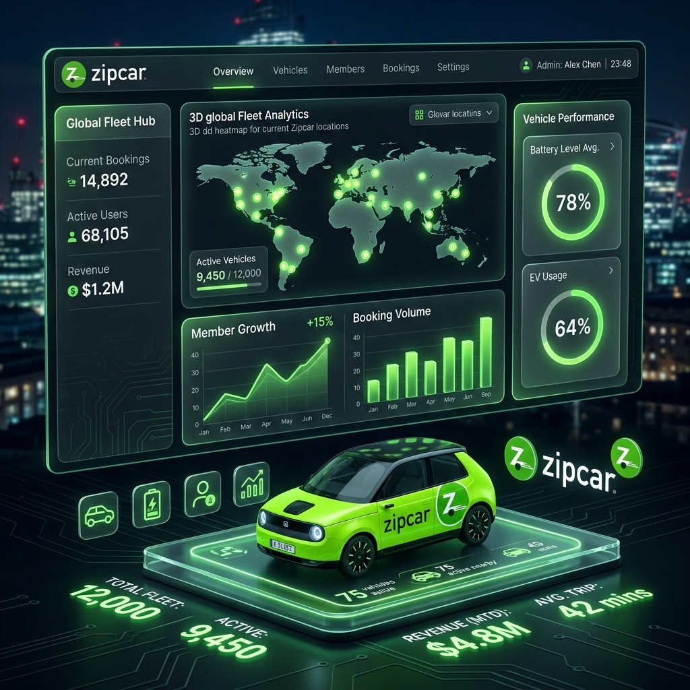

Product Management 2026
PM 用 AI 寫 PRD 與原型？專家：搞錯方向了
專家指出，AI 的價值在於增強決策而非取代人際溝通，撰寫 PRD 與訪談等高度依賴共識的任務不應外包。
閱讀深度解析
AI Agent Slides 2026
Codex AI 簡報教學：做出可編輯投影片與專屬 Skills
打破問答聊天舊思維，介紹將排版外包、專注於前期邏輯大綱的 6 步驟簡報自動化實務。
閱讀深度解析
Executive Decision 2026
把 AI 當幕僚風險？解析去脈絡化與決策地圖
AI 容易使決策去脈絡化而淪為精美的文字遊戲。經理人應運用決策地圖分區，承擔痛苦的放棄與責任。
閱讀深度解析

AI Industry Disruption 2026
未來 2 年，一半的 PM 將被淘汰？
以往 PM 花費大量時間在 PRD 與流程控制，現在大多可被 AI 自動化取代。施政源指出：比寫 PRD 更值錢的是「場景想像力」。
閱讀深度解析

AI Engineering 2026
迴圈工程的興起：工程師不再寫提示詞
2026年站在 AI coding 最前線的工程師，已從「下指令」轉向「設計自己下指令的迴圈」。解密六大核心組件與實踐評估，探討如何當一個繼續理解程式碼的工程師。
閱讀深度解析
Geopolitical AI 2026
Anthropic Fable 5 下架與主權 AI 變局
美國以國安防止越獄為由，對 Anthropic 施加限制外國國籍出口令。解析股東告密漏洞始末，以及中國智譜 GLM-5.2 開源與台灣主權 AI 戰略。
閱讀深度解析
Hardware Revolution 2026
NVIDIA RTX Spark 處理器革命
首款整合 Grace CPU、Blackwell GPU 與高速統一記憶體的消費端晶片，提供 1 PetaFLOP 本地 AI 算力，打破 x86 雙雄主導格局。
閱讀深度解析
OS Strategy 2026
Apple WWDC26 與 OS 27 解析
深度剖析 Apple Intelligence 如何融入內建軟體與系統底層，以及 OS 27 Liquid Glass 的自訂透明度與 CPU 排程效能提升。
閱讀深度解析
Business Strategy 2026
科技巨頭商業戰略與人才思維
深入探討輝達百萬年薪招募簡報視覺設計師，以及宏碁行李箱年銷 2 億獨立分割的商業決策，揭示規格紅海中的場景敘事護城河。
閱讀深度解析
Edge Infrastructure 2026
Cloudflare 邊緣運算與
分佈式存儲架構深度研究
深度剖析 Cloudflare 旗下包含 R2 物件儲存、D1 邊緣資料庫、KV、Durable Objects 等核心組件之流量額度、資源限制與生產環境應用架構的最佳實踐。
閱讀深度解析
Corporate Strategy 2026
豐藝集團雙軌協同與
利基價值鏈分析報告
深度剖析母子公司如何通過零組件代理與高防禦醫療系統整合，達成利潤內部化，並提供即時營運沙盤推演模擬。
閱讀深度解析
Executive Education 2026
EMBA 1142 核心課程
策略管理與知識地圖
融合管理策略、經典組織理論、展望理論與行為財務、談判賽局模型、雙向平台冷啟動與倒V研究設計實作。
閱讀深度解析


Tech & Real Estate 2026
龍蝦、AI 代理與新青安
「養套殺」時代劇本
當我們享受著低廉的訂閱費與政府補貼的低利糖衣時，我們正一步步走進那個精心設計、難以逃脫的自動化魚塭。
閱讀深度解析
Game Theory 2026
純策略與混合策略推論
Nash Equilibrium Analysis
探討 3x3 非合作賽局中的純策略及混合策略 Nash 均衡，透過剔除嚴格劣勢策略並計算期望報酬，找出局中所有的均衡點。
閱讀深度解析

前瞻技術研究 2026
Transformers.js PWA
離線 Web AI 深度研究
基於 WebGPU/WASM 與 PWA 的離線推論架構，實現零延遲、高隱私、免伺服器成本的下一代 AI 基礎設施。
閱讀深度解析


AI × Character Design
AI 動漫角色設定
深度分析報告
從 Midjourney --cref 到 Stable Diffusion ControlNet，涵蓋遊戲 AI NPC 與 VTuber 自動化直播系統的實戰案例。
閱讀深度解析


更多洞察即將上線
持續追蹤科技戰略與商業底層邏輯，敬請期待下一篇深度解析。
前往 PC 完整版 →